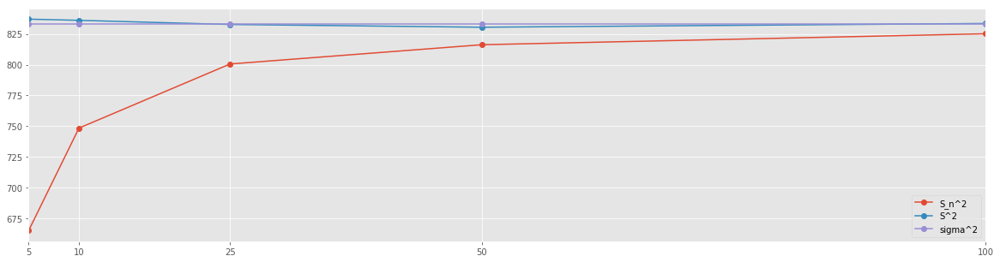
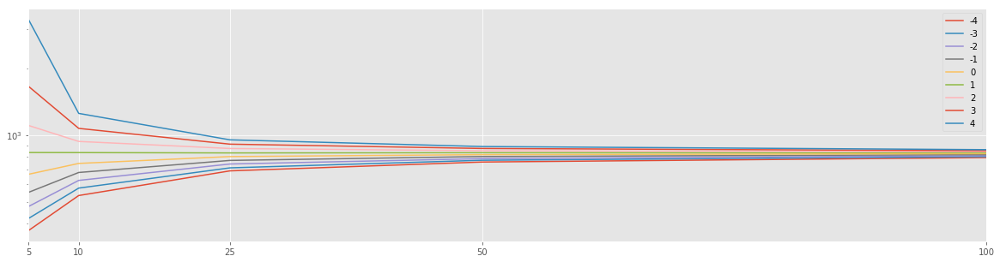

(Original post can be found in this gist)
It seems to be a reappearing question: what is the difference between pandas.std and numpy.std?.
See for example this SO thread.
But what does it mean that Pandas uses the unbiased estimator and Numpy does not?
In this post I would like to help you understand what is the difference and when which should be used.
I will try to achieve this by following the paper "Why divide by \(N-1\)?" by J. L. M. Wilkins (link).
In particular instead of using archaic software, I will redo the examples using Numpy and Pandas.
Background
What is the average and the standard deviation of height of humans? To answer this question, let us denote by \(X\) the whole population of humanity (at the moment); each individual would be denoted by \(X_i\). The average (or mean), denoted by \(\mu\) can be computed by
where \(N\) is the number of individuals. Next, the standard deviation is given by:
Recall that the variance is given and denoted by \(\sigma^2\); we will consider the variance from now on.
The task at hand is, obviously, impossible to accomplish. What you are likely to do is pick a sample \(X_{i(1)}, X_{i(2)}, \dots, X_{i(n)}\), where \(n < N\) and \(i(k)\) is a permutation. For the sake of simplicity, let us denote them by \(X_i\) where \(i=1,\dots,n\). Using this sample you will compute the sample mean, denoted by \(\bar{X}\) and the sample variance.
The first part, that is, the mean of the sample, is easy:
It turns out that \(\bar{X}\) is an unbiased estimator of \(\mu\). Intuitively saying that it estimates nicely the real mean \(\mu\). See for example reference.
Things become trickier when it comes to the sample's variance, denoted by \(S^2\). One may try to compute \(S^2\) by "generalizing" the formula for \(\sigma^2\).
This would be denoted by \(S_n^2\):
However, this is biased estimator of \(\sigma^2\). The unbiased estimator is
All this is explained nicely, and in a deeper way, in various places; even Wikipedia is a good start. An intuitive explanation can be found here. In this post, I will follow the examples of Wilkins which gives a better motivation that indeed \(S_n^2\) is biased and \(S^2\) is not.
Let the game begin
Before we start, let us stress that by default, pandas.std is equivalent to \(S^2\) and numpy.std to \(S_n^2\).
%matplotlib inline
import matplotlib.pyplot as plt
plt.style.use('ggplot')
import numpy as np
import pandas as pd
#
# In general tqdm is great and I strongly suggest to try it out, if you run this notebook
# locally. However, it doesn't render well in the post generated from this notebook. So I define
# A dummy function which does nothing.
#
# from tqdm import tqdm_notebook as tqdm
def tqdm(X):
return X
We start with a population \(a\) consisting of the numbers \(1\) to \(100\) (inclusive).
a = np.arange(1,101)
The mean \(\mu\) is
np.mean(a)
50.5
Next, we compute \(\sigma^2\); we use the default behavior of np.std.
np.std(a)**2
833.25
We can double check that indeed Numpy delivers:
np.sum(np.power(a - np.mean(a), 2)) / len(a)
833.25
By default, Pandas will fail:
np.power(pd.Series(a).std(), 2)
841.66666666666663
But this can be fixed:
np.power(pd.Series(a).std(ddof=0), 2)
833.25
Great, this all aligns well with the documentation and the definitions.
In the sequence of values you have covers the WHOLE of the population in question, you should either use np.std or pd.std(ddof=2).
Sample the whole population
Time to play the game. As we cannot have all values for all the individuals in our population, we have to use a sample. We will now do it for various sample sizes. At each step we will compute \(S^2\) and \(S_n^2\) and compare the results. We take sample sizes of \(n = 5, 10, 25, 50\) and \(100\). For each sample size, we compute \(15000\) times \(S^2\) and \(S_n^2\). Lastly, we average the results for each sample size.
SIZES = [5, 10, 25, 50, 100]
N=15000
Sn_s = []
for SIZE in tqdm(SIZES):
size_res = []
for i in tqdm(range(N)):
size_res.append(np.std(np.random.choice(a, size=SIZE))**2)
Sn_s.append(np.sum(np.array(size_res)) / N)
Sn_s = pd.Series(Sn_s, index=SIZES)
S_s = []
for SIZE in tqdm(SIZES):
size_res = []
for i in tqdm(range(N)):
size_res.append(np.std(np.random.choice(a, size=SIZE), ddof=1)**2)
S_s.append(np.sum(np.array(size_res)) / N)
S_s = pd.Series(S_s, index=SIZES)
Let's collect the results into a table.
res_df = pd.concat([Sn_s, S_s], axis=1, keys=['S_n^2', 'S^2'])
res_df['sigma^2'] = pd.Series(np.std(a) ** 2 * np.ones(res_df.shape[0]), index=res_df.index)
res_df
| S_n^2 | S^2 | sigma^2 | |
|---|---|---|---|
| 5 | 665.030288 | 837.021747 | 833.25 |
| 10 | 748.445851 | 836.054854 | 833.25 |
| 25 | 800.563841 | 832.693469 | 833.25 |
| 50 | 816.226962 | 830.447212 | 833.25 |
| 100 | 825.145818 | 833.501119 | 833.25 |
res_df.plot(figsize=(20,5), marker='o')
plt.xticks(res_df.index);

Recall that \(\sigma^2 = 833.25\). It is clear that the \(n-1\) normalization yields better approximation of the variance of the population. This approximation is already fairly accurate when using mere \(5\%\) of the population as a sample.
Summary
So, if you know that the series of values that you have represents ALL members of your population, you should go ahead and use \(\sigma^2\) (using either np.std or pandas.std(ddof=0)).
If however, your series of values is merely a sample of a bigger population, then you should use the unbiased estimator of \(\sigma^2\), denoted by \(S^2\) and computed by either np.std(ddof=1) or pandas.std.
An experiment
As a mathematician, I now ask myself how would estimators with different \(n\) would behave. Let
In particular, \(D_n^2 = S_n^2\) and \(D_{n-1}^2 = S^2\).
res = []
for n in tqdm(np.arange(-4,5)):
Dn_s = []
for SIZE in tqdm(SIZES):
size_res = []
for i in tqdm(range(N)):
size_res.append(np.std(np.random.choice(a, size=SIZE), ddof=n)**2)
Dn_s.append(np.sum(np.array(size_res)) / N)
Dn_s = pd.Series(Dn_s, index=SIZES, name=str(n))
res.append(Dn_s)
df_res = pd.DataFrame(res).T
df_res.plot(logy=True, figsize=(20,5))
plt.xticks(df_res.index);
